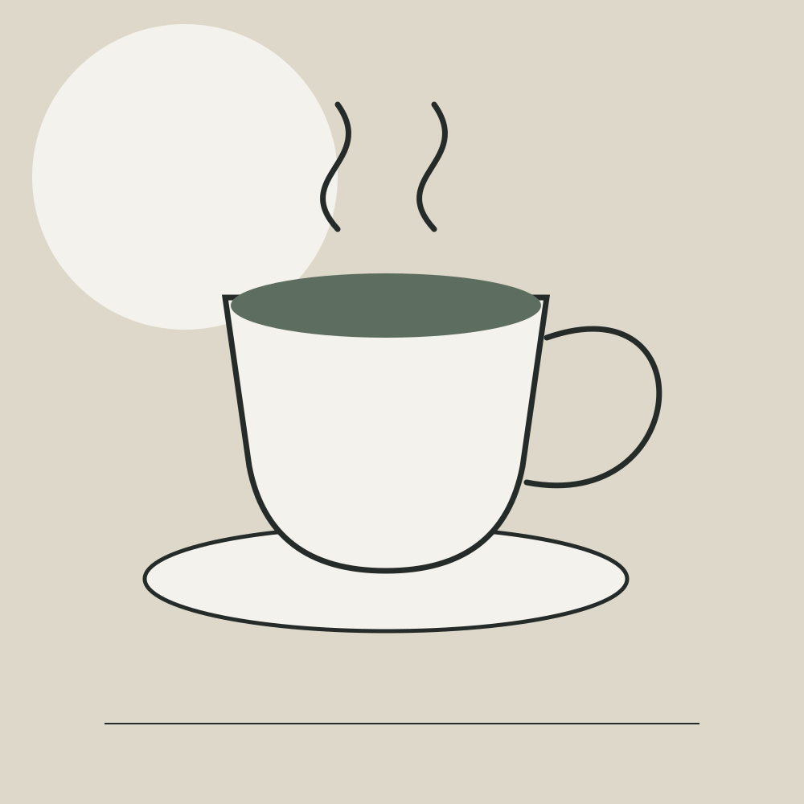

TAKASAGO / HYOGO
on cafe
ひと息のスイッチを、onに。

コーヒーと喫茶 / 兵庫県
ABOUT THE CAFE
高砂市神爪、前田ビル1Bにあるカフェ。
食べログでカフェとして掲載されています。現在のスイーツやドリンクの内容は公式Instagramからご確認ください。
A LITTLE PAUSE
営業日や、その日のメニュー。お出かけの前に、お店の案内を。
PLAN YOUR VISIT
兵庫県高砂市神爪1-12-7 前田ビル 1B
月〜水・金〜日 10:00〜17:00（L.O.16:30）／木休
食べログ掲載値。最新の営業予定は公式Instagramをご確認ください。
公開情報の確認日：2026年11月26日。住所・営業内容は掲載時点の情報で、変更される場合があります。